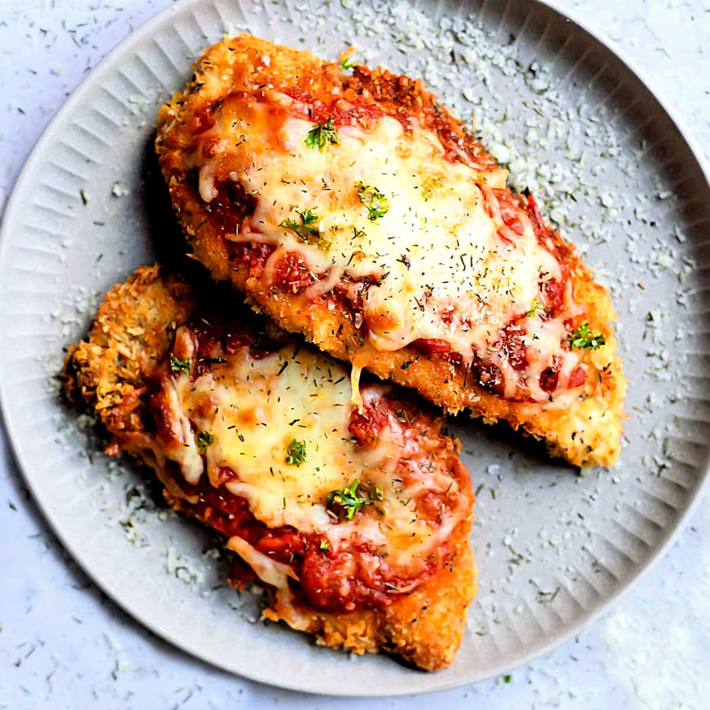

Chicken Parmesan Recipe

Description
This simple yet flavorful chicken Parmesan recipe features succulent, tender chicken breasts coated in a crispy,
golden Parmesan crust. Topped with a vibrant, tangy homemade marinara sauce and crowned with a layer of perfectly melted,
gooey cheese, each bite is a satisfying blend of textures and flavors. Served over al dente rigatoni pasta, it's a hearty,
comforting dish that's sure to impress.
Ingredients
Marinara Sauce
- 3 tablespoons extra-virgin olive oil
- ½ medium onion, finely chopped
- 4 cloves garlic, minced
- 1 (14 ounce) can Italian crushed tomatoes with basil
- ½ cup chicken broth
- 2 tablespoons red wine
- ½ teaspoon garlic powder
- ½ teaspoon onion powder
- ½ teaspoon dried oregano
- ½ teaspoon Italian seasoning
- 1 pinch crushed red pepper flakes
- 1 pinch white sugar
- salt and ground black pepper to taste
Pasta
- 1 (16 ounce) box rigatoni
Chicken
- 1 cup all-purpose flour
- 1 teaspoon garlic powder, divided
- ½ teaspoon salt, divided
- ¼ teaspoon ground black pepper
- 2 large eggs
- 3 tablespoons milk
- 1 cup Italian-seasoned bread crumbs
- ¼ cup grated Parmesan cheese
- 1 teaspoon dried oregano
- 1 teaspoon Italian seasoning
- ½ teaspoon garlic powder
- ¼ teaspoon salt
- 4 boneless, skinless chicken breasts
- 2 cups canola oil for frying, or as needed
- ¾ cup shredded mozzarella cheese
- ¼ cup grated Parmesan cheese
Instructions
- Make the sauce: Heat oil in a large skillet over medium heat. Add onion and garlic; cook and stir until fragrant, about 2 minutes.
Add crushed tomatoes, chicken broth, wine, garlic powder, onion powder, oregano, Italian seasoning, red pepper flakes, and sugar; season
with salt and pepper. Stir to combine, reduce the heat to low, and simmer, stirring occasionally, until sauce thickens, about 15 minutes.
Keep warm until needed.
- While the sauce is cooking, bring a large pot of lightly salted water to a boil. Add rigatoni and cook, stirring occasionally, until
tender yet firm to the bite, about 13 minutes. Drain and keep warm.
- At the same time, start the chicken: Preheat the oven to 450 degrees F (230 degrees C). Line a rimmed baking sheet with parchment paper.
- Set out three large mixing bowls for breading chicken. Combine flour, 1/2 teaspoon garlic powder, 1/4 teaspoon salt, and pepper in the first
bowl. Whisk together eggs and milk in the second bowl. Combine bread crumbs, Parmesan cheese, oregano, Italian seasoning, 1/2 teaspoon garlic powder,
and 1/4 teaspoon salt in the third bowl.
- Place chicken breasts in a resealable plastic bag and flatten with a meat mallet to a thickness of 1/4 inch. Dredge a chicken breast in flour
mixture and shake off excess. Dip into egg mixture, then coat with bread crumb mixture. Place onto a plate. Repeat to bread remaining chicken.
- Fill a large, cast iron skillet with 1 inch oil; heat over medium-high heat until oil is hot but not smoking. Add breaded chicken in batches;
cook until golden brown, 1 to 2 minutes per side. Transfer chicken to the prepared baking sheet. Sprinkle mozzarella and Parmesan over chicken.
- Bake in the preheated oven until chicken reaches an internal temperature of 165 degrees F (74 degrees C) and the cheeses have melted, about 5 minutes.
- Plate pasta portions. Stir basil into sauce and ladle over pasta. Top each portion with chicken.